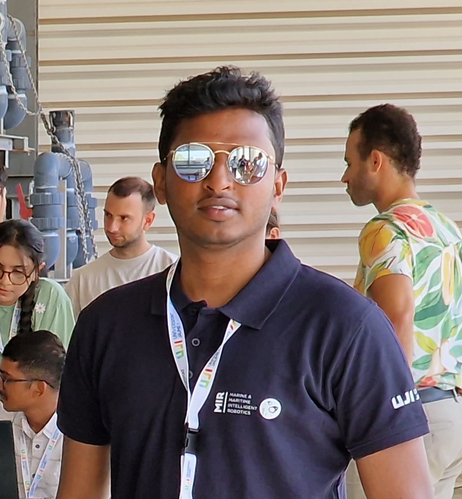

Hi, my name is
PhD Researcher at NTNU working at the intersection of computer vision, deep learning, and ultrasound medical imaging — developing novel methods for myocardial motion tracking and strain analysis in echocardiography.

I am a PhD Candidate in the Department of Circulation and Medical Imaging (ISB) at NTNU, Norway, developing AI-driven methods for echocardiographic analysis. My work sits at the intersection of computer vision, deep learning, and clinical cardiology.
Before my PhD I completed an Erasmus Mundus M.Sc. in Marine and Maritime Intelligent Robotics (jointly at UTLN and NTNU), interned at SINTEF Digital on 3D reconstruction with Neural Radiance Fields (NeRF), and worked 1.5 years as a Software Engineer at SAMSUNG R&D on Augmented Reality and various SDKs.
I hold a B.Sc. in Computer Science and Engineering from United International University, Bangladesh, with an Erasmus Mundus exchange and bachelor's thesis at Universität Bremen, Germany.
Designed a novel coarse-to-fine deep learning architecture for long-range myocardial point tracking in 2D echocardiography—enabling automated cardiac motion analysis and enhancing clinical strain assessment. Try the Hugging Face demo to see it in action.
Identified directional bias in cardiac motion estimation, developed effective mitigation strategies, and fine-tuned state-of-the-art models—resulting in improved robustness and generalization across diverse echocardiography scenarios.
Developed a multi-label video classification framework for automated underwater ship hull inspection—enabling simultaneous detection of multiple conditions in video data and advancing automation in subsea robotics and industrial inspection workflows.
Adapted Neural Radiance Fields to reconstruct detailed 3D models of challenging objects from monocular image sequences for robotic camera. Explored scene representation, volumetric rendering, and novel-view synthesis — work conducted at SINTEF Digital that directly led to the master's thesis.
Advancing Myocardial Function Imaging in Echocardiography using Vision Intelligence
Develop a novel deep learning-based point tracking method for accurate tissue motion estimation across full cardiac cycles in echocardiographic sequences.
Extend the automated strain estimation pipeline to multiple cardiac views, enabling regional myocardial strain analysis for comprehensive cardiac assessment.
Explore an AI-assisted, human-in-the-loop system that enhances strain measurement accuracy and supports efficient clinical data annotation workflows.
Validate the fully automated strain estimation pipeline across relevant patient cohorts to establish clinical applicability and reliability for cardiac diagnosis.
Vision-based 3D Scene Reconstruction for Underwater Robotics using Neural Radiance Fields
Develop deep learning-based detection and segmentation methods for robust visual perception in challenging underwater environments with limited visibility and color distortion.
Adapt and implement Neural Radiance Fields for efficient 3D scene reconstruction from monocular video, in collaboration with SINTEF Digital's applied research infrastructure.
Design and implement motion planning and closed-loop control algorithms for underwater ROV navigation, integrating visual feedback from the perception pipeline.
Integrate perception and reconstruction modules into a unified pipeline and evaluate end-to-end performance in simulated and real underwater test scenarios.
Also on Google Scholar · ResearchGate · ORCID
I'm always open to research collaborations, academic discussions, and new opportunities. Whether you have a question or just want to say hello — feel free to reach out!
Say Hello →